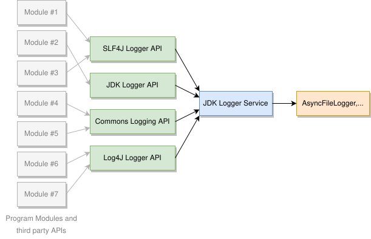

# Moleculer logging basics
Moleculer uses SLF4J (opens new window) for logging. Each Service, Middleware and HttpMiddleware instance inherits its own "logger" instance from the superclass. Here is a short example showcasing how you can access the logger:
import org.springframework.stereotype.Controller;
import services.moleculer.service.*;
@Controller
public class Math extends Service {
/**
* The "math.add" Action.
*/
Action add = ctx -> {
// Log request - the "logger" instance was made by superclass
logger.info("Request received: " + ctx);
// Calculate response
int a = ctx.params.get("a", 0);
int b = ctx.params.get("b", 0);
int c = a + b;
return ctx.params.put("c", c);
};
}
# Dependencies
The APIs used by Moleculer Framework use multiple logging implementations (eg. Apache Commons Logging, Log4j, JDK logging). It is advisable to redirect all of them to the JDK logger as this will work with standalone (Netty-based) runtime and within Jakarta EE servers. To do this, add the following dependencies to the build file:
dependencies {
implementation group: 'org.slf4j', name: 'slf4j-api', version: '2.0.18'
implementation group: 'org.slf4j', name: 'slf4j-jdk14', version: '2.0.18'
implementation group: 'org.slf4j', name: 'log4j-over-slf4j', version: '2.0.18'
implementation group: 'org.slf4j', name: 'jcl-over-slf4j', version: '2.0.18'
// ...other dependencies...
}
# Logging in standalone runtime mode
When running standalone mode (on top of Netty Server), you need to set the "logging.config" parameter to something like this:
java -Dlogging.config="classpath:logging.properties"
-cp <list of JARs>
services.moleculer.config.MoleculerRunner <app class>
Example of a BAT file that starts in "development" stage (opens new window)
By default, Moleculer uses services.moleculer.logger.AsyncFileLogger to write log files in standalone mode.
This logger writes files from a separate Thread and creates a new file every day.
It can compress and/or delete old log files (see the "compressAfter" and "deleteAfter" properties).
Setting the "logToConsole" parameter to "true" writes a colored log to System.out
(optional dependency of colored output (opens new window))
In the "production" stage, the "logToConsole" parameter should be set to "false",
while in the "development" stage it should be set to "true":
handlers = services.moleculer.logger.AsyncFileLogger
services.moleculer.logger.AsyncFileLogger.directory = log
services.moleculer.logger.AsyncFileLogger.prefix = moleculer.
services.moleculer.logger.AsyncFileLogger.encoding = UTF8
services.moleculer.logger.AsyncFileLogger.compressAfter = 30 days
services.moleculer.logger.AsyncFileLogger.deleteAfter = 365 days
services.moleculer.logger.AsyncFileLogger.logToConsole = true
services.moleculer.logger.AsyncFileLogger.level = INFO
.level = INFO
With the above configuration and dependency settings the following logging structure is implemented:

# Logging in Jakarta EE environment
When using Spring Boot, the logger is mostly the Jakarta EE server's own logger, but this is optional. You can turn off the initialization of Spring Boot logging, by setting the "org.springframework.boot.logging.LoggingSystem" property to "none". Thus, the Moleculer Application will use the Jakarta EE server's default logging mechanism. In "web.xml" it looks like this:
<?xml version="1.0" encoding="UTF-8"?>
<web-app xmlns="https://jakarta.ee/xml/ns/jakartaee" ...>
<servlet>
<servlet-name>Moleculer Servlet</servlet-name>
<servlet-class>services.moleculer.web.servlet.MoleculerServlet</servlet-class>
<!-- USE THE JAKARTA EE SERVER'S LOGGING SYSTEM -->
<init-param>
<param-name>-Dorg.springframework.boot.logging.LoggingSystem</param-name>
<param-value>none</param-value>
</init-param>
...
</servlet>
</web-app>
Example of complete web.xml (opens new window)
# Detailed Example
This demo project (opens new window) demonstrating some of the capabilities of Moleculer. In the project, logging is set to both runtime modes (Jakarta EE and Netty). The project can be imported into the Eclipse IDE or IntelliJ IDEA.